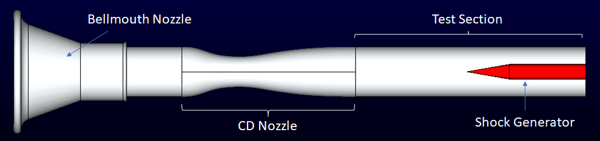
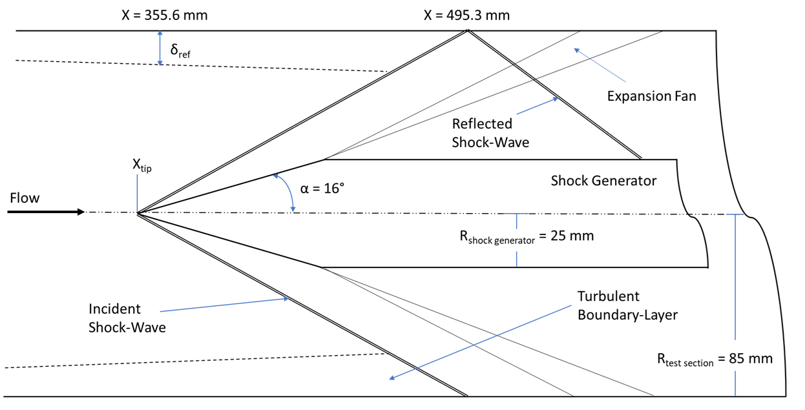
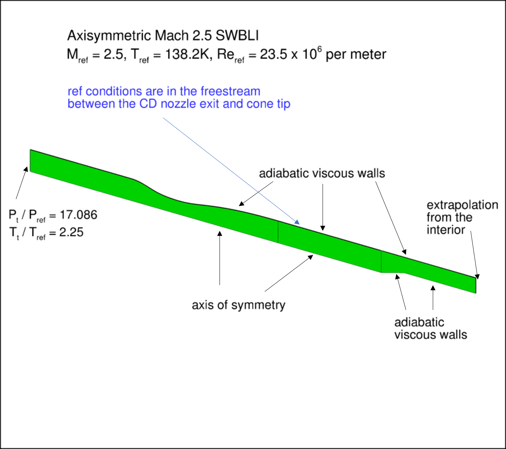
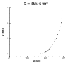
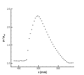
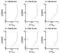
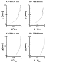
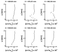
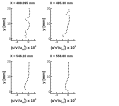

|
Turbulence Modeling Resource |
Return to: Turbulence Modeling Resource Home Page
The purpose here is to provide a validation case for turbulence models. Unlike verification, which seeks to establish that a model has been implemented correctly, validation compares CFD results against data in an effort to establish a model's ability to reproduce physics. A sequence of nested grids of the same family are provided here if desired. Data are also provided for comparison. For this shock boundary-layer interaction case, the data is from the following experiment:
Additional details on the simulations used to generate this validation case can be found in the following reference:
The geometry chosen for the simulations is based off the axisymmetric configuration from the NASA Turbulent Computational Fluid Dynamics Validation Experiment (TCFDVE) and is shown in the following figure. It consists of a cone attached to a cylinder located within a circular test section. The shock is generated by the cone in the center of the test section, which creates a shock boundary-layer interaction (SBLI) on the wall of the tunnel. This type of SBLI has been called an "incident-shock interaction" or an "impinging-shock interaction." The maximum cone diameter, as well as the cylinder diameter, is 50 mm while the diameter of the test section is 170 mm. While two cone half-angles were used in the experiment and the accompanying validations studies, only the 16° half-angle case is included on this webpage. The cone/cylinder act as the shock generator and is referred to as such on the accompanying pages. Upstream of the shock generator is an axially symmetric convergent-divergent (CD) nozzle to accelerate the flow to the desired test section supersonic Mach number condition, which in this case is Mach 2.5.
|
 |
|
 |
The computational domain and the boundary conditions are shown in the following figure. It is important to note that this axisymmetric case is not a 2-D computation; it uses a periodic (rotated) grid system with appropriate boundary conditions on the periodic sides of the grid.
|
 |
The experimental data included for comparisons are the reference station boundary-layer profile (located at x = 355.6 mm), the test section wall static pressure, and radial profiles of the axial velocity and turbulent shear stress through the interaction region. The reference station boundary-layer profile is from the Pitot probe measurements while the axial profiles are from the particle image velocimetry measurements. The wall static pressure has been non-dimensionalized by the reference pressure of 15096.2 Pa and the radial profiles have been non-dimensionlized by the reference axial velocity of 589.1 m/s.






The experimental data for comparisons are provided here:
|
RESULTS |
LINK TO EQUATIONS |
MRR Level |
|
SA |
SA eqns |
4 |
|
SST-Vm |
SST-Vm eqns |
3 |
(Other turbulence model results may be added in the future.)
Return to: Turbulence Modeling Resource Home Page
Page Curators: Christopher Rumsey,
Ethan Vogel,
Clark Pederson
Last Updated: 07/15/2026